Home Network Ubiquiti Upgrade
A few weeks ago, I went back to Pennsylvania for a week to attend my college swim team reunion, and my brother's high school graduation. While I was away, the wifi-router Rebecca and I were using decided to die (of course). When I returned, I setup our old router as a temporary fix. It was terrible. So, I began researching how I should upgrade our network. This time around, I am doing this correctly.
The router that died was a Linksys WRT 1900. When I got home, I setup our old router as a temporary fix. It's a very basic Linksys E1200. After using it for just a few hours, I remembered why I hated it so much. It is slower than a snail, and seems to stop working each day or so, requiring me to unplug and re-plug it daily (I think it is something with DHCP. It keeps trying to reassign IPs to devices, and then doesn't seem to understand how to accept their requests afterwards). Thus, the more temporary this solution was, the better.
If I am redoing our network setup, I want to do it properly this time, splitting out the router from the wireless access point using good hardware and software. My plan is to get an ubiquity edge-router-x, and pair it with an Ubiquiti wireless access point.
 
 Originally I wanted to build a small pfsense box to use as a router, but after digging a little deeper and doing some research, I saw that the EdgeRouter would more than meet my needs and is a great start to a network upgrade. Additionally, at $50 (USD), it truly is a great deal. As for the wireless access point, I was always considering an UniFi device, and I thought the EdgeRouter should pair rather seamlessly, considering both products are made by Ubiquiti.
From what I read, the EdgeRouter is a great router with an okay firewall, while pfsense is an amazing firewall that can do routing. So, if I want to dig more into pfsense in the future, I can still set up a firewall box, and connect it in front of the router.
Modem --> pfsense --> EdgeRouter-x -> devices
So... I think I've finalized my decision and will purchase the items soon. I will update when I get them.